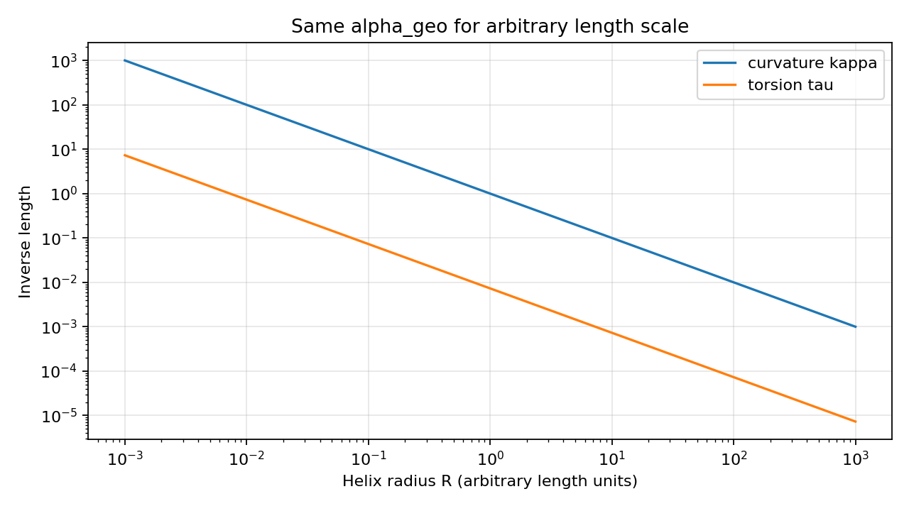
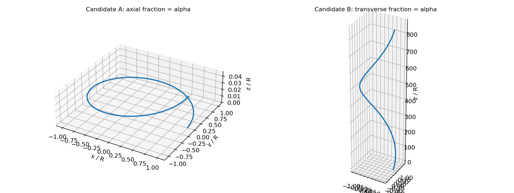
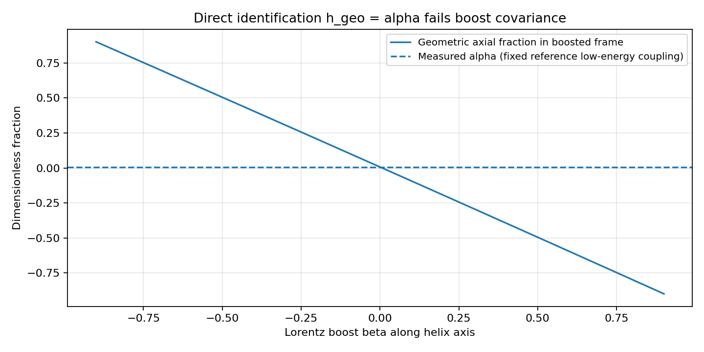
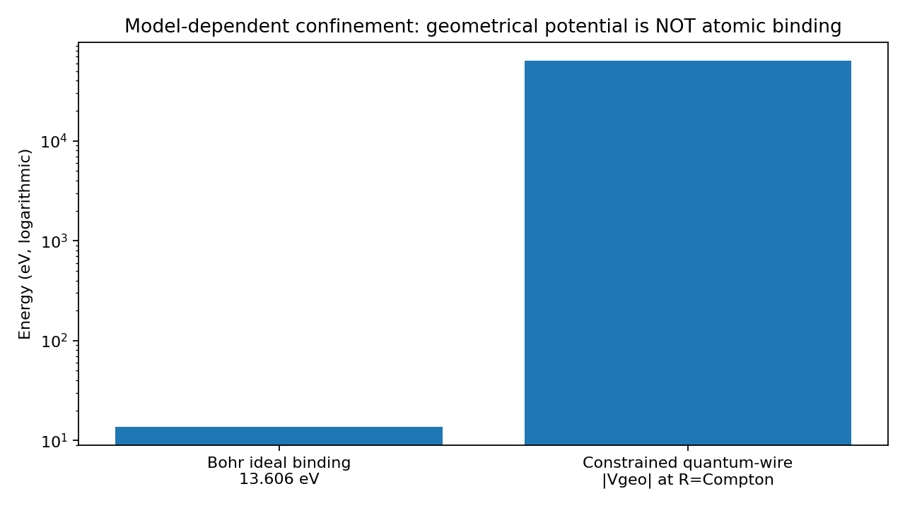

ROOT
V132：空间光速螺旋、曲率挠率封装与精细结构常数
副题：只有 c=1
的协变量纲、量子相位、反例与可证伪性 研究专著 · 第一卷 · 2026-11-21
内容与科学诚实声明
本书研究用户提出的命题：“h
是空间光速螺旋曲率与挠率的封装，而且与精细结构常数有关。”这句话至少有三种可能含义：（1）h
是无量纲几何参数；（2）h 表示一个几何长度或螺距；（3）h
直接等于普朗克常数。三种含义的量纲和实验检验完全不同。为避免符号混用，本书使用
h g e o h_{\mathrm{geo}} h P h_{\mathrm{P}} ℏ = h P / ( 2 π ) \hbar=h_{\mathrm{P}}/(2\pi) P P c = 1 c=1 ℏ = 1 \hbar=1 G = 1 G=1
数学方面，我们完成了匀速圆柱螺旋的曲率、挠率、反演、标度与 Lorentz
变换的严格推导；提出一组方便组织研究的几何封装记号；并证明在没有额外动力学规则时，纯螺旋几何无法唯一预测精细结构常数。量子方面，我们展示已有
Bohr、QED、量子波导曲率势、挠率规范相位和 Dirac
自旋结构与该提案的联系及冲突。数值方面，使用 CODATA 2022
常数和自动化测试进行独立计算。
科学边界：几何恒等式不是新的场方程；把一个实测数字写入螺旋角度不是预测；对任意模型参数找到一条“符合数据”的曲线不是四力统一。只有当一个协变动力学模型不借助测量值预先调节，就推出
α \alpha
第一章｜符号、量纲与“只有 c=1”
以长度
L L M M T T c = 1 c=1 [ κ ] = [ τ ] = L − 1 [\kappa]=[\tau]=L^{-1} [ P ] = L [P]=L [ ℏ ] = 能量 × 时间 = M L [\hbar]=\text{能量}\times\text{时间}=ML [ G ] = L / M [G]=L/M α \alpha h g e o h_{\mathrm{geo}}
在 SI
单位，h P = 6.62607015 × 10 − 34 J s h_{\mathrm{P}}=6.62607015\times10^{-34}\,\mathrm{J\,s} ℏ = h P / 2 π \hbar=h_{\mathrm{P}}/2\pi h = κ + τ h=\kappa+\tau h g e o = τ / κ 2 + τ 2 h_{\mathrm{geo}}=\tau/\sqrt{\kappa^2+\tau^2} 定义 ，并未建立
ℏ \hbar
精细结构常数的 SI 标准表达为
α = e 2 4 π ε 0 ℏ c .
\alpha=\frac{e^2}{4\pi\varepsilon_0\hbar c}.
采用
c = 1 c=1 α = e 2 / ( 4 π ε 0 ℏ ) \alpha=e^2/(4\pi\varepsilon_0\hbar) ε 0 \varepsilon_0 α = e H L 2 / ( 4 π ℏ ) \alpha=e_{\mathrm{HL}}^2/(4\pi\hbar) c = 1 c=1 α \alpha
“唯一常数是 c=1”不等于
ℏ \hbar G G
第二章｜三维圆柱螺旋的全微分推导
考虑齐次欧氏空间里一条恒定半径、恒定频率、恒定轴速的轨迹：
𝐫 ( t ) = ( R cos ω t , R sin ω t , u t ) , R > 0 , ω > 0 .
\mathbf r(t)=(R\cos\omega t,R\sin\omega t,ut),\quad R>0,\quad\omega>0.
速度、加速度及三阶导数分别是
𝐫 ̇ = ( − R ω sin ω t , R ω cos ω t , u ) , 𝐫 ̈ = ( − R ω 2 cos ω t , − R ω 2 sin ω t , 0 ) , 𝐫 ⃛ = ( R ω 3 sin ω t , − R ω 3 cos ω t , 0 ) .
\begin{aligned}
\dot{\mathbf r}&=(-R\omega\sin\omega t,R\omega\cos\omega t,u),\\
\ddot{\mathbf r}&=(-R\omega^2\cos\omega t,-R\omega^2\sin\omega t,0),\\
\dddot{\mathbf r}&=(R\omega^3\sin\omega t,-R\omega^3\cos\omega t,0).
\end{aligned}
记总速率
v = R 2 ω 2 + u 2 v=\sqrt{R^2\omega^2+u^2} 运动学公设 取
v = 1 v=1 R 2 ω 2 + u 2 = 1 R^2\omega^2+u^2=1
Frenet 曲率定义为
κ = | 𝐫 ̇ × 𝐫 ̈ | / | 𝐫 ̇ | 3 \kappa=|\dot{\mathbf r}\times\ddot{\mathbf r}|/|\dot{\mathbf r}|^3 | 𝐫 ̇ × 𝐫 ̈ | = R ω 2 v |\dot{\mathbf r}\times\ddot{\mathbf r}|=R\omega^2 v
κ = R ω 2 v 2 .
\boxed{\kappa=\frac{R\omega^2}{v^2}}.
Frenet 挠率定义为
τ = ( 𝐫 ̇ × 𝐫 ̈ ) ⋅ 𝐫 ⃛ / | 𝐫 ̇ × 𝐫 ̈ | 2 \tau=(\dot{\mathbf r}\times\ddot{\mathbf r})\cdot\dddot{\mathbf r}/|\dot{\mathbf r}\times\ddot{\mathbf r}|^2
τ = u ω v 2 .
\boxed{\tau=\frac{u\omega}{v^2}}.
在
v = 1 v=1 κ = R ω 2 \kappa=R\omega^2 τ = u ω \tau=u\omega R 2 ω 2 + u 2 = 1 R^2\omega^2+u^2=1
κ 2 + τ 2 = ω 2 , ω = κ 2 + τ 2 .
\boxed{\kappa^2+\tau^2=\omega^2},\qquad
\boxed{\omega=\sqrt{\kappa^2+\tau^2}}.
一般总速率不等于 1 时，正确关系是
κ 2 + τ 2 = ω / v \sqrt{\kappa^2+\tau^2}=\omega/v ω = v κ 2 + τ 2 \omega=v\sqrt{\kappa^2+\tau^2}
还可推出角频率的反演：给定
κ > 0 \kappa>0 τ \tau ω = κ 2 + τ 2 \omega=\sqrt{\kappa^2+\tau^2} u = τ / κ 2 + τ 2 u=\tau/\sqrt{\kappa^2+\tau^2} R = κ / ( κ 2 + τ 2 ) R=\kappa/(\kappa^2+\tau^2)
第三章｜第一条“几何封装”方程
本书定义一个归一化复几何数：
ℋ g e o = κ + i τ κ 2 + τ 2 .
\boxed{\mathcal H_{\mathrm{geo}}=\frac{\kappa+i\tau}{\sqrt{\kappa^2+\tau^2}}}.
它满足
| ℋ g e o | = 1 |\mathcal H_{\mathrm{geo}}|=1 ℋ g e o = cos θ + i sin θ \mathcal H_{\mathrm{geo}}=\cos\theta+i\sin\theta θ = atan2 ( τ , κ ) \theta=\operatorname{atan2}(\tau,\kappa) κ ≥ 0 \kappa\ge0 sin θ = u \sin\theta=u cos θ = R ω \cos\theta=R\omega
h g e o := ℑ ℋ g e o = τ κ 2 + τ 2 = u
\boxed{h_{\mathrm{geo}}:=\Im\mathcal H_{\mathrm{geo}}=\frac{\tau}{\sqrt{\kappa^2+\tau^2}}=u}
和
χ g e o := ℜ ℋ g e o = κ / κ 2 + τ 2 = R ω \chi_{\mathrm{geo}}:=\Re\mathcal H_{\mathrm{geo}}=\kappa/\sqrt{\kappa^2+\tau^2}=R\omega χ g e o 2 + h g e o 2 = 1 \chi_{\mathrm{geo}}^2+h_{\mathrm{geo}}^2=1 i i
还可以把一圈的曲率和挠率积分用作另一个封装。每一圈角度变化
2 π 2\pi T = 2 π / ω T=2\pi/\omega s = v t = t s=v t=t L t u r n = 2 π / ω L_{\mathrm{turn}}=2\pi/\omega
∫ t u r n κ d s = 2 π χ g e o , ∫ t u r n τ d s = 2 π h g e o .
\boxed{\int_{\mathrm{turn}}\kappa\,ds=2\pi\chi_{\mathrm{geo}}},\qquad
\boxed{\int_{\mathrm{turn}}\tau\,ds=2\pi h_{\mathrm{geo}}}.
这两个公式有一个潜在的概念陷阱：当
u ≠ 0 u\ne0
特别强调：ℋ g e o \mathcal H_{\mathrm{geo}} h g e o h_{\mathrm{geo}} ℏ \hbar S t r i a l = ℏ ∫ τ d s S_{\mathrm{trial}}=\hbar\int\tau ds ℏ \hbar
第四章｜曲率、挠率、半径和螺距的闭环
由前章的反演，任意
κ > 0 \kappa>0 τ \tau
R = κ κ 2 + τ 2 , P = 2 π τ κ 2 + τ 2 .
\boxed{R=\frac{\kappa}{\kappa^2+\tau^2}},\qquad
\boxed{P=\frac{2\pi\tau}{\kappa^2+\tau^2}}.
因此
P 2 π R = τ κ .
\boxed{\frac{P}{2\pi R}=\frac\tau\kappa}.
把曲率和挠率替换为
( q κ , q τ ) (q\kappa,q\tau) q > 0 q>0 ℋ g e o \mathcal H_{\mathrm{geo}} R ↦ R / q R\mapsto R/q P ↦ P / q P\mapsto P/q ω ↦ q ω \omega\mapsto q\omega h g e o h_{\mathrm{geo}}
标度退化定理。 对每个指定的
0 < η < 1 0<\eta<1 R > 0 R>0 u = η u=\eta ω = 1 − η 2 / R \omega=\sqrt{1-\eta^2}/R h g e o = η h_{\mathrm{geo}}=\eta R 2 ω 2 + u 2 = 1 R^2\omega^2+u^2=1 ℏ \hbar
如果把
η \eta α \alpha

图
4-1：无量纲几何比例不固定绝对曲率和挠率尺度
第五章｜精细结构常数的真正定义
精细结构常数描述低能电磁相互作用强度；在 SI 中
α = e 2 4 π ε 0 ℏ c .
\boxed{\alpha=\frac{e^2}{4\pi\varepsilon_0\hbar c}}.
CODATA 2022 推荐
α − 1 = 137.035999177 ( 21 ) \alpha^{-1}=137.035999177(21) α = 0.0072973525643314245 \alpha=0.0072973525643314245 1.1183 × 10 − 12 1.1183\times10^{-12}
精细结构常数是无量纲电磁耦合，但在量子场论中存在能标运行。若探测能量从远低于电子质量变到电弱能标，真空极化使有效耦合发生变化。NIST
的概述指出低能约为
1 / 137 1/137 1 / 128 1/128 α \alpha
本书会同时使用三个不同的
α \alpha α E M \alpha_{\mathrm{EM}} α g e o \alpha_{\mathrm{geo}} α B o h r \alpha_{\mathrm{Bohr}} α B o h r = α E M \alpha_{\mathrm{Bohr}}=\alpha_{\mathrm{EM}}
第六章｜从库仑力与量子作用量推导
α
在非相对论、无限重核、氢原子圆形玻尔轨道的近似中，采用
c = 1 c=1 m v 2 / r = e 2 / ( 4 π ε 0 r 2 ) mv^2/r=e^2/(4\pi\varepsilon_0 r^2) m v r = n ℏ mvr=n\hbar n = 1 n=1 r = ℏ / ( m v ) r=\hbar/(mv)
m v 2 r = e 2 4 π ε 0 r 2 ⇒ m v 2 r = e 2 4 π ε 0 ⇒ v = e 2 4 π ε 0 ℏ = α .
\frac{mv^2}{r}=\frac{e^2}{4\pi\varepsilon_0 r^2}
\quad\Rightarrow\quad
mv^2 r=\frac{e^2}{4\pi\varepsilon_0}
\quad\Rightarrow\quad
\boxed{v=\frac{e^2}{4\pi\varepsilon_0\hbar}=\alpha}.
于是
a 0 = ℏ m e α , λ ‾ C = ℏ m e , α = λ ‾ C a 0 .
\boxed{a_0=\frac{\hbar}{m_e\alpha}},\quad
\boxed{\bar\lambda_C=\frac{\hbar}{m_e}},\quad
\boxed{\alpha=\frac{\bar\lambda_C}{a_0}}.
数值 SI 换算得到
a 0 = 5.29177210544 × 10 − 11 a_0=5.29177210544\times10^{-11} λ ‾ C = 3.86159267435 × 10 − 13 \bar\lambda_C=3.86159267435\times10^{-13} α \alpha m e α 2 / 2 = 13.60569312 m_e\alpha^2/2=13.60569312
需要区分：这一推导开始就使用了电磁耦合
e e ℏ \hbar h g e o = α h_{\mathrm{geo}}=\alpha e 2 / ( 4 π ε 0 ℏ ) e^2/(4\pi\varepsilon_0\hbar)
第七章｜两个相容却互不等价的
α 螺旋嵌入
从
R 2 ω 2 + u 2 = 1 R^2\omega^2+u^2=1
嵌入 A：将轴向速度视为精细结构常数。 设
u = α u=\alpha R ω = 1 − α 2 R\omega=\sqrt{1-\alpha^2}
τ κ = α 1 − α 2 , P R = 2 π α 1 − α 2 .
\boxed{\frac{\tau}{\kappa}=\frac{\alpha}{\sqrt{1-\alpha^2}}},
\quad
\boxed{\frac{P}{R}=\frac{2\pi\alpha}{\sqrt{1-\alpha^2}}}.
当
α ≃ 0.00729735 \alpha\simeq0.00729735 1 − α 2 ≃ 0.999973374 \sqrt{1-\alpha^2}\simeq0.999973374
嵌入 B：将环向速度视为精细结构常数。 设
R ω = α R\omega=\alpha u = 1 − α 2 u=\sqrt{1-\alpha^2}
τ κ = 1 − α 2 α , P R = 2 π 1 − α 2 α .
\boxed{\frac\tau\kappa=\frac{\sqrt{1-\alpha^2}}\alpha},
\quad
\boxed{\frac P R=\frac{2\pi\sqrt{1-\alpha^2}}\alpha}.
这条轨迹近似沿轴光速前进，每一圈螺距约是半径的 861 倍。它也满足总速率
1，也能够把某个自然几何比例设成实验给出的
α \alpha
非唯一性结论。 只要没有新的独立动力学原则明确指定
α \alpha π \pi

图
7-1：相同精细结构常数数值的两种不同螺旋嵌入
第八章｜严格 Lorentz
协变性审查
当前三维轨迹的总速度为 1。沿
z z β \beta t ′ = γ ( t − β z ) t'=\gamma(t-\beta z) z ′ = γ ( z − β t ) z'=\gamma(z-\beta t) z = u t z=ut t ′ = γ ( 1 − β u ) t t'=\gamma(1-\beta u)t x , y x,y
ω ′ = ω γ ( 1 − β u ) , u ′ ⊥ = R ω γ ( 1 − β u ) .
\omega'=\frac{\omega}{\gamma(1-\beta u)},
\qquad
u'_\perp=\frac{R\omega}{\gamma(1-\beta u)}.
新的轴向速度由相对论速度合成公式给出
u ′ = u − β 1 − β u .
\boxed{u'=\frac{u-\beta}{1-\beta u}}.
在新坐标系中该轨迹仍为总速度 1 的螺旋，于是同样的定义给出
h ′ g e o = u ′ h'_{\mathrm{geo}}=u' u ≠ ± 1 u\ne\pm1 β \beta h ′ g e o ≠ h g e o h'_{\mathrm{geo}}\ne h_{\mathrm{geo}} u = α = 0.00729735256 u=\alpha=0.00729735256 β = 0.6 \beta=0.6 u ′ = − 0.5953091559 u'=-0.5953091559 α E M \alpha_{\mathrm{EM}}
协变性排除定理（针对直接外部空间轨迹） ：在任意
Lorentz
参考系下，将光速三维螺旋的轴速比例定义为同一个精细结构常数的普适不变量，与
Lorentz
速度合成冲突。证明就是上面的变换公式。它不是对任何“内部空间”理论的全面否定：若螺旋变量属于
Lorentz
标量的内部纤维、并有明确的规范和动力学定义，问题需重新研究。但那时内部变量不能再被当成普通三维空间中各观察者看到的单一外部坐标速度。
还有第二个相对论障碍。把三维轨迹
( 𝐫 ( t ) , t ) (\mathbf r(t),t) ( + − − − ) (+---) d s 2 = d t 2 − d 𝐫 2 = ( 1 − v 2 ) d t 2 = 0 ds^2=dt^2-d\mathbf r^2=(1-v^2)dt^2=0 v = 1 v=1

图 8-1：沿螺旋轴的 Lorentz boost
改变几何轴速比例
第九章｜量子本源：作用量相位而不是单纯轨迹
量子理论的核心输入之一是路径之间的相位关系：𝒜 [ γ ] = exp ( i S [ γ ] / ℏ ) \mathcal A[\gamma]=\exp(iS[\gamma]/\hbar) S S ℏ \hbar x 0 x^0 exp ( i S / ℏ ) \exp(iS/\hbar)
可把三维螺旋的一圈挠率积分写为
I τ = ∫ τ d s I_\tau=\int\tau ds ϕ τ = q ⊥ I τ \phi_\tau=q_\perp I_\tau q ⊥ q_\perp
若有人写
ℏ = m R 2 ω \hbar=mR^2\omega ℏ \hbar m m R R ω \omega R 2 ω 2 + u 2 = 1 R^2\omega^2+u^2=1 m R 2 ω mR^2\omega R R R = ℏ / m R=\hbar/m
量子现象还包含非交换的算符代数
[ x ̂ , p ̂ ] = i ℏ [\hat x,\hat p]=i\hbar 1 / 2 1/2
第十章｜弯曲量子波导：几何确实能够改变能谱
把粒子局限在弯曲细管中的量子问题是已建立的研究领域。在强横向束缚、非简并标量横向基态和适当光滑条件下，薄层量子化给出有效一维
Hamilton 算符
H e f f = − ℏ 2 2 m d 2 d s 2 − ℏ 2 κ ( s ) 2 8 m .
\boxed{H_{\mathrm{eff}}=-\frac{\hbar^2}{2m}\frac{d^2}{ds^2}-\frac{\hbar^2\kappa(s)^2}{8m}}.
第二项称为曲率诱导的几何势。这是几何与量子动力学发生真实联系的例子，但是它明确包含
ℏ \hbar m m τ 2 \tau^2
对具有简并横向模式的波导，法平面标架的旋转可以生成与挠率有关的有效规范联络。模式指标可令有效导数呈现
D s = ∂ s + i q ⊥ τ ( s ) D_s=\partial_s+i q_\perp\tau(s) exp ( i q ⊥ ∫ τ d s ) \exp(iq_\perp\int\tau ds)
但必须分清“某种受限量子材料里的有效规范场”与“真空中的基本电磁场”。从波导的几何规范联络到
QED
的基本规范耦合，还差电荷量子化、规范场自身动力学、虚过程及重整化等关键步骤。
第十一章｜精算反例：康普顿半径上的几何势有多大？
为检验数值尺度，选用上面嵌入 A，且人为指定 螺旋半径
R = λ ‾ C = ℏ / m e R=\bar\lambda_C=\hbar/m_e c = 1 c=1 κ = ( 1 − α 2 ) / R \kappa=(1-\alpha^2)/R
| V g e o | = ℏ 2 8 m e ( 1 − α 2 ) 2 R 2 = m e 8 ( 1 − α 2 ) 2 .
|V_{\mathrm{geo}}|=\frac{\hbar^2}{8m_e}\frac{(1-\alpha^2)^2}{R^2}
=\frac{m_e}{8}(1-\alpha^2)^2.
将该能量单位转换为 eV，得到约
63868.07 63868.07 13.60569 13.60569
这个数值差异不是 对所有空间螺旋假设的普遍排除，因为量子波导近似用于受限粒子，真实原子电子并不自动满足该约束，场的自能基准也不能随意对比；它的意义是：不能把已有的几何势公式简单套入康普顿螺旋后，就宣称已经导出氢原子结合能。任何希望靠曲率产生电子原子谱的模型，都必须提供正确的边界条件、势能基准、耦合方式及数值谱线。
进一步，量子波导的正则约化依赖导管宽度远小于曲率半径与相关波长等条件。若设想的“电子环路”只有约化康普顿尺寸，必须讨论相对论、反粒子自由度以及单粒子薛定谔描述是否仍有效。混用不同物理近似往往能产生好看的数字关系，却不能构成可靠的推导。

图
11-1：受限量子波导的几何势与玻尔结合能不是同一概念
第十二章｜自旋一半与螺旋模型的决定性区别
在 Dirac 理论中，自旋一半源于 Lorentz
群及其双覆盖群的旋量表示。旋量旋转
2 π 2\pi 4 π 4\pi
采用
c = 1 c=1 ℏ \hbar ( i ℏ γ μ D μ − m ) ψ = 0 (i\hbar\gamma^\mu D_\mu-m)\psi=0 D μ D_\mu γ μ \gamma^\mu D̸ 2 \not D^2
如果 ROOT
设想内禀螺旋产生自旋，则必须回答三个问题：为什么最低稳定表示是半整数而非所有整数？为何在磁场中得到正确的旋量耦合和
g g
第十三章｜从类比迈向统一：要构造哪一个作用量？
建立真正理论可从现有低能有效场论的结构出发，将背景时空、三种规范场和物质场一并表示为
S = 1 16 π G ∫ d 4 x − g ℛ + S S U ( 3 ) + S S U ( 2 ) + S U ( 1 ) + S f e r m i o n + S H i g g s + S i n t .
S=\frac1{16\pi G}\int d^4x\sqrt{-g}\,\mathcal R + S_{SU(3)}+S_{SU(2)}+S_{U(1)}+S_{\mathrm{fermion}}+S_{\mathrm{Higgs}}+S_{\mathrm{int}}.
在这个表达中，ℏ \hbar e i S / ℏ e^{iS/\hbar} c = 1 c=1 n ( x ) n(x) h g e o ( x ) h_{\mathrm{geo}}(x)
一种形式性探索 是令内部标量
φ \varphi α − 1 ( φ ) = α 0 − 1 + f ( φ ) \alpha^{-1}(\varphi)=\alpha_0^{-1}+f(\varphi) θ \theta f f α 0 \alpha_0
更强的候选必须在不同惯性参考系和不同电磁探测尺度 下预测相同的已知规律：局域
QED
运行耦合、轻子磁矩、原子精细结构、中微子和标准模型反常抵消等。只要无法兼容这些基础数据，就不应继续堆叠更多粒子尺度的几何拟合公式。
第十四章｜精细结构常数的能标运行是硬性约束
α \alpha 1 / 137 1/137 d α / d ln μ ≈ 2 α 2 / ( 3 π ) d\alpha/d\ln\mu\approx 2\alpha^2/(3\pi)
假设
h g e o h_{\mathrm{geo}} α ( μ ) = h g e o \alpha(\mu)=h_{\mathrm{geo}} α \alpha h g e o h_{\mathrm{geo}} α \alpha
对于精密预言，还必须区分经典光学/电磁几何相位与量子电磁耦合常数。几何相位可以取决于波导形状、曲线绕数、横向模式和外部条件；低能精细结构常数却具有普适且高度精密的实验约束。如果模型允许随样品几何形状轻易改变“电子电荷常数”，通常就与已知普适性不符，除非这只是在描述材料内部的有效参数而非真空基本常数。
第十五章｜无量纲引力参数与四力统一的边界
仅设
c = 1 c=1 α G ( m ) = G m 2 / ℏ \alpha_G(m)=Gm^2/\hbar G m e 2 / ( ℏ c S I ) Gm_e^2/(\hbar c_{\mathrm{SI}}) 10 − 45 10^{-45} α ≃ 7.3 × 10 − 3 \alpha\simeq7.3\times10^{-3} κ , τ \kappa,\tau
之前 ROOT 使用
G = 2 Z / c G=2Z/c Z := G c / 2 Z:=Gc/2 G G c = 1 c=1 G = 2 Z G=2Z α = λ ‾ C / a 0 \alpha=\bar\lambda_C/a_0 h g e o = τ / κ 2 + τ 2 h_{\mathrm{geo}}=\tau/\sqrt{\kappa^2+\tau^2} α \alpha
完整四力统一至少要包含：正确的 Lorentz
与广义协变性、S U ( 3 ) × S U ( 2 ) × U ( 1 ) SU(3)\times SU(2)\times U(1)
第十六章｜从定义到定理：验证矩阵
为避免“方程漂亮”与“理论正确”混淆，我们为每条核心关系建立四层验收标准。层次
A：纯数学恒等式，在明确假设下解析推导，符号和随机数检查通过。层次
B：给定模型的计算结果，可以数值复现，但输入可能来自实验。层次
C：可辨识性与独立预测，不可使用同一数据同时拟合和验收。层次
D：经过外部真实观测、误差和系统效应约束。这四层任何一步都不能用下一级测试替代。
A1
R 2 ω 2 + u 2 = 1 R^2\omega^2+u^2=1 A2
κ = R ω 2 \kappa=R\omega^2 τ = u ω \tau=u\omega A3
κ 2 + τ 2 = ω 2 \kappa^2+\tau^2=\omega^2 h g e o = u h_{\mathrm{geo}}=u B1 若选择
h g e o = α E M h_{\mathrm{geo}}=\alpha_{\mathrm{EM}} A4
此认同在普通外部三维轨迹的 Lorentz boost
下变化，是对普适不变性主张的反例。D1
目前不存在以这套关系为基础、在不固定
α \alpha α \alpha
B2
a 0 , λ ‾ C , α a_0,\bar\lambda_C,\alpha B3
薄层量子势模型中的巨大康普顿尺度几何能，是模型误用风险提示，不构成一项新的基本粒子质量测量。C1
要打破模型退化，至少需要一个独立于精细结构常数测量的几何预测，例如某类高精度装置的几何相关能级差，并排除常规波导几何势和电磁背景。C2
对真正粒子场，需要协变、规范不变且可量子化的作用量，不能只提出三维路径。
附带重要逻辑规则：数据样本太小或没有记录误差模型时，应当使用“尚不能判断”，而非“完全正确”。程序测试只验证实现符合写下的公式；如果公式作为自然理论是错误的，完美的软件测试也不会让物理理论变正确。
第十七章｜数值精算：常数输入与数据独立性
本轮采用 NIST/CODATA 2022
参考值：α − 1 = 137.035999177 ( 21 ) \alpha^{-1}=137.035999177(21) α = 0.0072973525643314245 \alpha=0.0072973525643314245 ℏ \hbar h P h_{\mathrm{P}} h P = 6.62607015 × 10 − 34 J s h_{\mathrm{P}}=6.62607015\times10^{-34}\,\mathrm{J\,s} m e ≃ 9.1093837139 × 10 − 31 k g m_e\simeq9.1093837139\times10^{-31}\,\mathrm{kg} λ ‾ C ≃ 3.86159267435 × 10 − 13 \bar\lambda_C\simeq3.86159267435\times10^{-13} a 0 ≃ 5.29177210544 × 10 − 11 a_0\simeq5.29177210544\times10^{-11}
两个几何识别分支都作为固定公式计算，不从任何新实验读取几何数据。分支
A 的
κ R = 1 − α 2 = 0.999946748645552 \kappa R=1-\alpha^2=0.999946748645552 τ R = α 1 − α 2 = 0.007297158264790744 \tau R=\alpha\sqrt{1-\alpha^2}=0.007297158264790744 κ R = α 2 \kappa R=\alpha^2 τ R = α 1 − α 2 \tau R=\alpha\sqrt{1-\alpha^2} u R ω uR\omega
本书还给出
α \alpha y = α − 1 y=\alpha^{-1} σ y = 2.1 × 10 − 8 \sigma_y=2.1\times10^{-8} α = 1 / y \alpha=1/y σ α ≃ σ y / y 2 ≃ 1.1182784 × 10 − 12 \sigma_\alpha\simeq\sigma_y/y^2\simeq1.1182784\times10^{-12} τ / κ = f ( α ) = α / 1 − α 2 \tau/\kappa=f(\alpha)=\alpha/\sqrt{1-\alpha^2} f ′ ( α ) = ( 1 − α 2 ) − 3 / 2 f'(\alpha)=(1-\alpha^2)^{-3/2} α \alpha
另一个重要事实是标准物理常数之间的相关性。CODATA
推荐常数来自共同调整，不能把所有推荐值当作相互独立的实测量，使用它们的代数定义后再声称“多个独立实验预测成功”。真正独立的检查应当有新平台、新物理量和清晰的误差协方差矩阵。
第十八章｜符号推导与随机性质测试
几何推导可以通过 SymPy 将参数
R , ω , u R,\omega,u R 2 ω 2 + u 2 = 1 R^2\omega^2+u^2=1 src/root_v132.py
负责数值计算，tests/test_v132.py 包含 43
项独立测试方法；其中额外包含 2,000 组随机螺旋几何性质检查和 500 组
Lorentz boost 检查。测试随机种子固定，以保证复现。
不能把 43 项程序断言称为 43
条新物理定律。自动化测试只覆盖规定数学模型、特定数值范围、边界及反例；任何现实应用都要求额外的实验建模。测试中特别检查：当
α \alpha h g e o h_{\mathrm{geo}}
测试还检查两种封装识别、螺距、积分扭转角、康普顿比例、薄层势
R − 2 R^{-2} h P = 2 π ℏ h_{\mathrm{P}}=2\pi\hbar data/calculation_results.json，并生成
helix_parameter_scan.csv 与
boost_scan.csv，配合图像可追溯每个显示数字的来源。
在求解广义内部空间模型之前，建议先把这些轻量级测试变成无法绕过的预注册门槛：任何新方程如果宣称只用一个实测常数生成所有其他量，须列出显式输入、隐含先验、单位约定、失败时的判决规则和独立预测对象。如果出现
Lorentz
非不变、量纲不一致或者只是在符号上替换已知定义，应当停止声称“重大突破”，回到作用量层面修正模型。
第十九章｜怎样设计真正能够证伪的实验？
第一类实验是几何受限量子波导 。改变曲率
κ \kappa − ℏ 2 κ 2 / ( 8 m ) -\hbar^2\kappa^2/(8m)
第二类实验是不同法向标架和内部模式的几何相位 。同一条曲线在不同横向态上可以给出不同的挠率敏感度。纯粹非简并标量基态的局部
Hamilton 算符可能完全没有挠率项，而简并态可以形成非平凡规范联络。若 ROOT
对所有模式都预测统一的挠率势，其预言就可被这一区别检验。因螺旋单圈路径通常不闭合，实验必须提供真实闭合回路或明确的端点干涉连接。
第三类实验是普适常数与局部几何的解耦 。设想在可控纳米螺旋中测得几何依赖的相位，不能自动将相位变化解释成真空
α \alpha
第四类是相对论协变性测试 。不是让宏观材料高速移动，而是理论上检查局域有效作用量是否在惯性系变换下保持形式一致。对于普通外部光速螺旋，h g e o = u h_{\mathrm{geo}}=u
第二十章｜量子
Berry/Wilczek–Zee 联络的研究路线
几何相位的基本思路是：如果 Hamilton 算符依赖缓慢变化的外部参数
λ \lambda | n ( λ ) ⟩ |n(\lambda)\rangle 𝒜 i = i ⟨ n | ∂ λ i n ⟩ \mathcal A_i=i\langle n|\partial_{\lambda_i}n\rangle γ = ∮ 𝒜 i d λ i \gamma=\oint\mathcal A_i d\lambda_i 2 π 2\pi
在细量子波导中，横向法平面随弧长转动，其连接常与 Frenet
挠率有关。当简并横向基态被保留时，内部态基底的协变导数可以产生与
τ ( s ) \tau(s)
然而，一个简单量子波导 holonomy 是在给定
ℏ \hbar 2 π α 2\pi\alpha α \alpha
第二十一章｜关于“最伟大核心方程”的研究裁定
如果把数学层面 的最佳封装列为候选，现阶段最简洁的是
ℋ g e o ( κ , τ ) = κ + i τ κ 2 + τ 2 , | ℋ g e o | = 1
\boxed{
\mathcal H_{\mathrm{geo}}(\kappa,\tau)
=\frac{\kappa+i\tau}{\sqrt{\kappa^2+\tau^2}},\qquad
|\mathcal H_{\mathrm{geo}}|=1
}
以及在速度归一化圆柱螺旋模型内
ω = κ 2 + τ 2 , ℑ ℋ g e o = u , P 2 π R = τ κ .
\boxed{\omega=\sqrt{\kappa^2+\tau^2},\qquad
\Im\mathcal H_{\mathrm{geo}}=u,\qquad
\frac{P}{2\pi R}=\frac\tau\kappa.}
如果把物理层面 需要验证的联系列为候选，则应写成显式的实验残差，而不是直接宣布等号已被证明：
Δ α = τ κ 2 + τ 2 − e 2 4 π ε 0 ℏ ( c = 1 ) .
\boxed{\Delta_\alpha=\frac\tau{\sqrt{\kappa^2+\tau^2}}-\frac{e^2}{4\pi\varepsilon_0\hbar}\quad(c=1)}.
只有当两边是由独立物理机制和独立测量确定的量、并且对惯性系不敏感时，Δ α = 0 \Delta_\alpha=0 u = α u=\alpha
若所谓“h 的本源”是指
h P h_{\mathrm{P}} κ , τ \kappa,\tau h g e o h_{\mathrm{geo}} α \alpha
第二十二章｜可证伪量的最小预注册模板
预注册研究不应写“用尽一切算法找到吻合”，而应写明：理论参数从何而来、预测量是什么、在什么条件下宣布失败。对量子波导类比，预注册版本可固定横向束缚方式、曲线半径、弧长、横向模式及能谱测量方式；用标准受限
Hamilton 算符计算一个零假设数据集；再提供 ROOT
独立产生的新项以及其预测能谱偏移。留出部分器件和数据集不能参与新项系数的拟合。
对“几何生成真空
α \alpha α \alpha α \alpha
为了保护研究的可信度，实验方案还应规定阴性结果如何公开：若粒子质量谱、Lorentz
不变性或已知 QED
关系失败，则需要标注该具体版本“被数据排除”，不能用更改参数的方式将原始预注册结论改成成功。新版本可以继续研究，但应保留版本日志和真实失败记录。
第二十三章｜研究版本之间的逻辑关系
此前 ROOT V119–V126 建立了若干 Yukawa
第五力的离散谱反演和观测一致性检验；V127–V131
更多研究量子相位、曲率联络、标准模型反常、大统一规范耦合以及粒子阈值。这些领域的数学工具都具有独立的意义，但它们不会自动因为出现在同一
ZIP 中就形成一套不含额外输入的“终极理论”。
本轮 V132
返回更基础的提问：一个空间螺旋的曲率和挠率能否承载量子作用量尺度与精细结构常数？答案分三层。第一层：可以组织成明确定义的无量纲几何复数及积分。第二层：可以在受限量子波导中产生已有的几何势与条件性的有效规范相位。第三层：尚不能从普通三维光速螺旋独立预测
α \alpha ℏ \hbar α \alpha
并非每次版本升级都应增加一个新的基本粒子、任意耦合或自由函数。更有希望的路线是以一套尽可能小的内部自由度和协变作用量为基础，提出能在实验上与
QED/GR
区分的单一、明确预言。若不能产生这种预言，理论应当被标识为“几何类比/解释性数学模型”，而非已经得到四力统一。
第二十四章｜全书结论：数学已闭环，物理仍需独立证据
第一，几何定理已证明。 设
v = 1 v=1 κ = R ω 2 \kappa=R\omega^2 τ = u ω \tau=u\omega ω 2 = κ 2 + τ 2 \omega^2=\kappa^2+\tau^2 ℋ g e o \mathcal H_{\mathrm{geo}} κ , τ \kappa,\tau
第二，与
α \alpha 无论选
h g e o = α h_{\mathrm{geo}}=\alpha χ g e o = α \chi_{\mathrm{geo}}=\alpha α \alpha
第三，h g e o h_{\mathrm{geo}} h P h_{\mathrm{P}}
几何比例无量纲，普朗克常数具有作用量量纲。把
ℏ \hbar ℏ \hbar ℏ \hbar ℏ \hbar
第四，真实量子几何相互作用是存在的。
曲率可导致受限量子运动的标量几何势，在适当简并内部模式下挠率可产生有效规范联络及可观测
holonomy。它们是可以严谨研究的桥梁，但适用领域和假设必须写清，不能直接称为真空
QED 或基本粒子统一。
第五，四力大统一仍是开放问题。 V132
没有推出正确的三代粒子谱、重整化群、引力尺度、G G
附录 A｜核心方程速查
单一单位选择：c = 1 c=1 ℏ , G \hbar,G
三维螺旋：𝐫 ( t ) = ( R cos ω t , R sin ω t , u t ) \mathbf r(t)=(R\cos\omega t,R\sin\omega t,ut)
光速约束：R 2 ω 2 + u 2 = 1 R^2\omega^2+u^2=1
曲率：κ = R ω 2 \kappa=R\omega^2
挠率：τ = u ω \tau=u\omega
频率：ω = κ 2 + τ 2 \omega=\sqrt{\kappa^2+\tau^2}
几何复封装：ℋ g e o = ( κ + i τ ) / κ 2 + τ 2 \mathcal H_{\mathrm{geo}}=(\kappa+i\tau)/\sqrt{\kappa^2+\tau^2}
几何虚分量：h g e o = τ / κ 2 + τ 2 = u h_{\mathrm{geo}}=\tau/\sqrt{\kappa^2+\tau^2}=u
几何实分量：χ g e o = κ / κ 2 + τ 2 = R ω \chi_{\mathrm{geo}}=\kappa/\sqrt{\kappa^2+\tau^2}=R\omega
半径反演：R = κ / ( κ 2 + τ 2 ) R=\kappa/(\kappa^2+\tau^2)
单圈螺距：P = 2 π τ / ( κ 2 + τ 2 ) P=2\pi\tau/(\kappa^2+\tau^2)
一圈扭转积分：∫ t u r n τ d s = 2 π u \int_{\mathrm{turn}}\tau ds=2\pi u
精细结构常数：α = e 2 / ( 4 π ε 0 ℏ ) \alpha=e^2/(4\pi\varepsilon_0\hbar) c = 1 c=1
玻尔关系：α = λ ‾ C / a 0 \alpha=\bar\lambda_C/a_0 λ ‾ C = ℏ / m e \bar\lambda_C=\hbar/m_e a 0 = ℏ / ( m e α ) a_0=\hbar/(m_e\alpha)
Boost
变换：u ′ = ( u − β ) / ( 1 − β u ) u'=(u-\beta)/(1-\beta u)
受限粒子几何势：V g e o = − ℏ 2 κ 2 / ( 8 m ) V_{\mathrm{geo}}=-\hbar^2\kappa^2/(8m)
路径相位：e i S / ℏ e^{iS/\hbar} ℏ \hbar
引力无量纲参数：α G = G m 2 / ℏ \alpha_G=Gm^2/\hbar
候选检验残差：Δ α = h g e o − α E M \Delta_\alpha=h_{\mathrm{geo}}-\alpha_{\mathrm{EM}}
附录 B｜与本书对应的验证文件
src/root_v132.py：全部核心几何与常数计算，开头写明单位约定。tests/test_v132.py：43 项新测试，其中还包含 2,000
条随机几何性质、500 条 Lorentz 变换性质。scripts/generate_results.py：生成 CSV、JSON
和四张可视化图。data/calculation_results.json：精算结果的可复算机器格式。data/helix_parameter_scan.csv：无量纲角度和挠率扫描。data/boost_scan.csv：Lorentz boost 反例扫描。figures/two_equally_valid_alpha_embeddings.png：同一
α \alpha figures/lorentz_boost_counterexample.png：h g e o h_{\mathrm{geo}} figures/model_dependent_geometric_potential.png：模型依赖几何势尺度。figures/scale_degeneracy.png：固定无量纲
α \alpha
附录 C｜参考文献及适用范围
NIST/CODATA 2022 fundamental
constants：https://physics.nist.gov/cuu/Constants/
。精细结构常数、电子质量和标准数据。
NIST, Current advances: The fine-structure
constant：https://physics.nist.gov/cuu/Constants/alpha.html
。电磁耦合、Bohr 速度类比和运行耦合的概述（部分历史性 SI 叙述应以当前
CODATA 为准）。
CODATA 2022
常数推荐论文：https://www.nist.gov/publications/codata-recommended-values-fundamental-physical-constants-2022
。
R. C. T. da Costa, Quantum mechanics of a constrained particle,
Physical Review A 23 , 1982 (1981 publication
listing)：https://journals.aps.org/pra/abstract/10.1103/PhysRevA.23.1982
。曲率诱导势和受限量子系统。
Xu-Yang Hou, Xianlong Gao, Hao Guo, Torsion-induced gauge
structure in curved quantum waveguides
(2026)：https://arxiv.org/abs/2606.03725
。非简并标量态与简并内部态的挠率区别。
Quantum mechanics of particles constrained to spiral curves with
application to polyene chains , Journal of Molecular Modeling
(2024)：https://pmc.ncbi.nlm.nih.gov/articles/PMC11217072/
。受限曲线上的量子动力学应用。Determination of the fine-structure constant with an accuracy of
81 parts per trillion , Nature 588
(2020)：https://www.nature.com/articles/s41586-020-2964-7
。独立精密精细结构常数测量实例。
这些文献支持已建立的数学和物理背景，不支持“ROOT 已经从曲率挠率推导出
α \alpha
书稿完成说明。
这是可出版扩写的第一卷研究专著草稿。用户提出的“一亿字”属于远超单次可可靠生成和校验的规模，本卷没有用重复扩写、伪造结果或无意义填充凑字数；另附长期出版蓝图。未来每一卷应明确新定理、反例、实验或复算贡献，接受逐卷修订和同行核验。